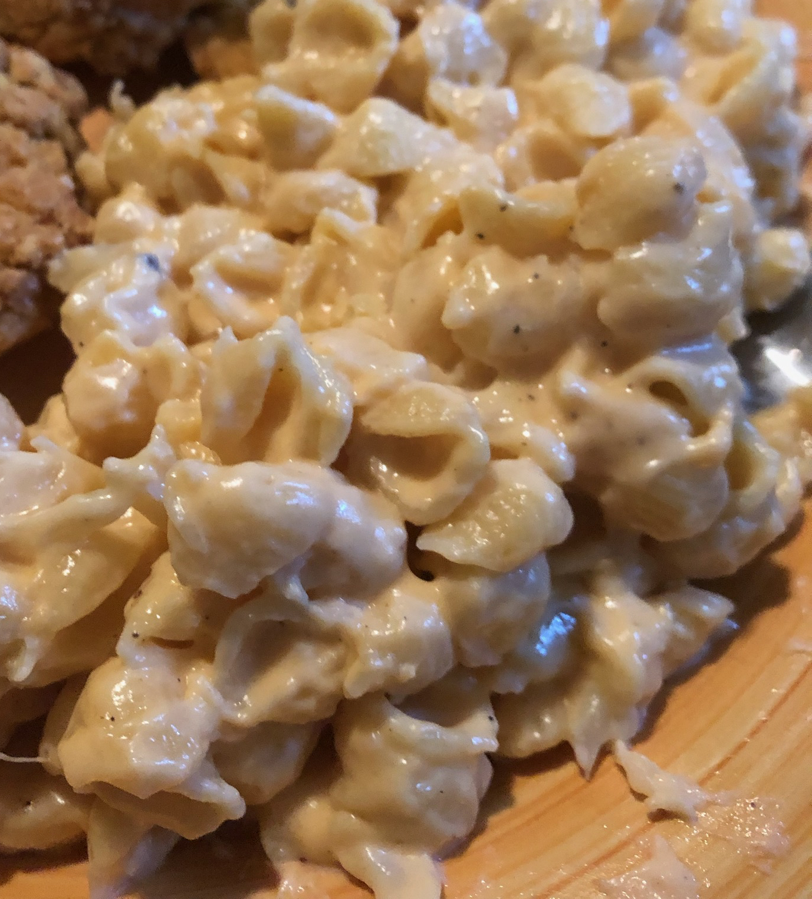

Cauliflower Mac-N-Cheese

Description
When you need dinner to be slightly healthier than Krafts
Eat it
Ingredients
- 1½ cups elbow macaroni
- ½ cup cauliflower florets
- cooking spray
- 1 tablespoon olive oil
- 1 tablespoon all-purpose flour
- ½ cup milk
- 1½ cups shredded Cheddar cheese
- ½ (8 ounce) package cream cheese
- ½ teaspoon salt
- ⅛ teaspoon ground black pepper
Directions
- Bring a large pot of lightly salted water to a boil. Cook elbow macaroni in the boiling water, stirring occasionally until tender yet firm to the bite, 8 minutes. Drain.
- Place a steamer insert into a saucepan and fill with water to just below the bottom of the steamer. Bring water to a boil. Add cauliflower, cover, and steam until tender, 5 to 6 minutes. Place cauliflower in a blender or food processor; blend until smooth.
- Coat a large saucepan with non-stick cooking spray; place over medium heat. Add oil and flour; cook, stirring constantly, until a thick paste forms, 1 to 2 minutes. Add milk; cook and stir until mixture thickens, 3 to 4 minutes.
- Mix cauliflower, Cheddar cheese, cream cheese, salt, and pepper into milk mixture; stir until sauce is smooth. Fold macaroni into sauce.
Return to Homepage